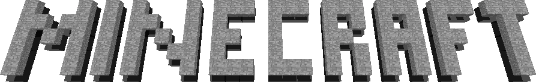

Alpha 1.2.3_ 06 Minecraft technology test
Minecraft Alpha 1.2.3_ 06 is a special release based on minecraft alpha 1.2.3. In essence, it is an internal technology test of minecraft, which is used to test advanced OpenGL and 64bit Java. Its game content is similar to alpha 1.2.3_ 04, the last copy version can't adapt to all systems well because of the first use of advanced OpenGL, so we have delivered it to other teams to adjust its adaptability
last update: 2021/7/9 11:00
Notice:This version of Minecraft require 64 bit of java for run.
Can't run? Don't know how to run? View documents